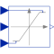

VariableLimiterLimit the range of a signal with variable limits |

|
Information
This information is part of the Modelica Standard Library maintained by the Modelica Association.
The Limiter block passes its input signal as output signal as long as the input is within the upper and lower limits specified by the two additional inputs limit1 and limit2. If this is not the case, the corresponding limit is passed as output.
The parameter homotopyType in the Advanced tab specifies the
simplified behaviour if homotopy-based initialization is used:
NoHomotopy: the actual expression with limits is usedLinear: a linear behaviour y = u is assumed (default option)Fixed: it is assumed that the output is fixed at the valueySimplified
If it is known a priori in which region the input signal will be located, this option can help a lot by removing one strong nonlinearity from the initialization problem.
Parameters (4)
| strict |
Value: false Type: Boolean Description: = true, if strict limits with noEvent(..) |
|---|---|
| homotopyType |
Value: Modelica.Blocks.Types.VariableLimiterHomotopy.Linear Type: VariableLimiterHomotopy Description: Simplified model for homotopy-based initialization |
| ySimplified |
Value: 0 Type: Real Description: Fixed value of output in simplified model |
| limitsAtInit |
Value: true Type: Boolean Description: Has no longer an effect and is only kept for backwards compatibility (the implementation uses now the homotopy operator) |
Connectors (4)
| u |
Type: RealInput Description: Connector of Real input signal |
|
|---|---|---|
| y |
Type: RealOutput Description: Connector of Real output signal |
|
| limit1 |
Type: RealInput Description: Connector of Real input signal used as maximum of input u |
|
| limit2 |
Type: RealInput Description: Connector of Real input signal used as minimum of input u |
Used in Components (2)
|
Modelica.Electrical.Machines.Examples.ControlledDCDrives.Utilities Limited PI-controller with anti-windup and feed-forward |
|
|
Modelica.Electrical.Machines.Examples.ControlledDCDrives.Utilities DC-DC inverter |